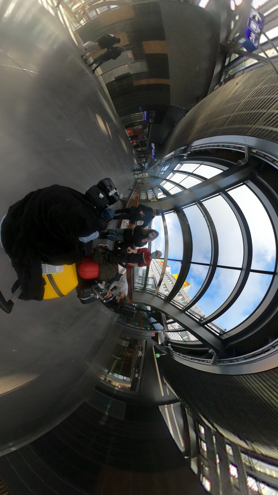
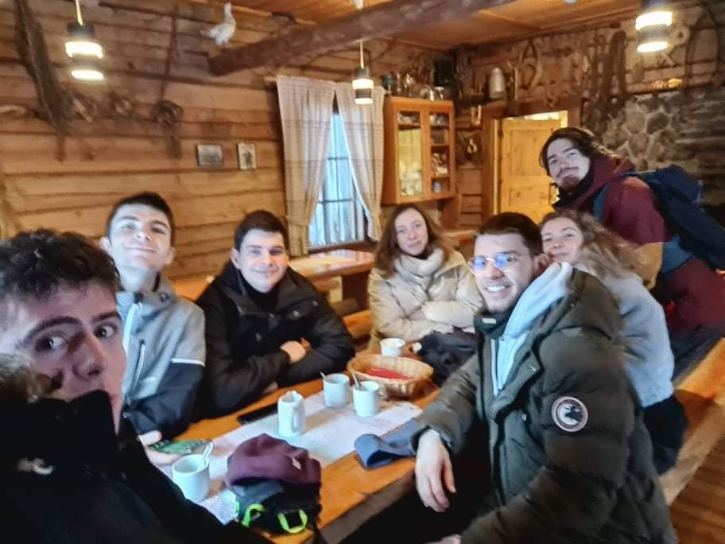

Sunday, February 13:
After arriving in Finland on February 11th, we went to Rovaniemi in Lapland on Sunday February 13th.
We were 7 French people to make this trip; Raphaël, Rémi, Clément, Inès, Killian, Thomas and myself (Emma).
This trip was incredible! (And very expensive.) We left from Seinäjoki where we had just settled with the 11:09 train.
The trip was long (more than 5 hours) but we finally arrived in Rovaniemi station at 16:46. It was already dark.
We gathered at the station before starting a walk to the AirBnB whose owner was waiting for us.
On the way we met the owner who, without really checking that we were his customers, gave us the keys of the apartment!
After about twenty minutes of walking, we arrived in the apartment. It was huge, very well decorated and very modern.
A dream! There was even a sauna in one of the bathrooms! After being divided in the rooms we did some shopping,
cooked and spent a great evening playing Mario Kart and Mario Party on Remi's Switch installed in the living room for the occasion.
In the night some of us went for a walk to make some nice snowmen and take some pictures.
Monday, February 14:

The next morning, we went to a reindeer farm.
To get there we took the bus and then walked for about 30 minutes in the freezing cold.
This walk was the one I liked best in Lapland. The landscapes were great, the fir trees were huge, the sky was beautiful,
the ground was covered with a thick layer of snow, ... It was incredible! Our meeting with the Reindeer was also incredible.
The passion of their breeders was obvious and the local heritage they made us discover very unique!
We had the opportunity to drink a hot drink accompanied by local cakes rocked by the stories of the master of the house,
it was a wonderful experience. We then returned to Rovaniemi in the same way. We did some more shopping and ended up stopping for
lunch in a shopping mall to get our strength back for the afternoon ahead. In the afternoon we went to the Santa Claus Village.
 This is probably the activity that disappointed me the most. It was actually a very commercial place where every single item was overpriced.
For a picture with Santa Claus, you had to be very patient (huge queue) and pay 30€! We still walked around and enjoyed the landscape.
In the evening all the indicators were green to see the northern lights! We went out to try to see them by ourselves by -19°C felt -24°C.
As we went along, the outside temperature was going down and when we finally arrived at the right place to see them, our eyelashes, toes,
fingers and nostrils were freezing. We waited and had fun to finally see a small northern light that we called "mini boreo" before going back because
we were totally frozen despite our equipment!
This is probably the activity that disappointed me the most. It was actually a very commercial place where every single item was overpriced.
For a picture with Santa Claus, you had to be very patient (huge queue) and pay 30€! We still walked around and enjoyed the landscape.
In the evening all the indicators were green to see the northern lights! We went out to try to see them by ourselves by -19°C felt -24°C.
As we went along, the outside temperature was going down and when we finally arrived at the right place to see them, our eyelashes, toes,
fingers and nostrils were freezing. We waited and had fun to finally see a small northern light that we called "mini boreo" before going back because
we were totally frozen despite our equipment!